完整报告参考样稿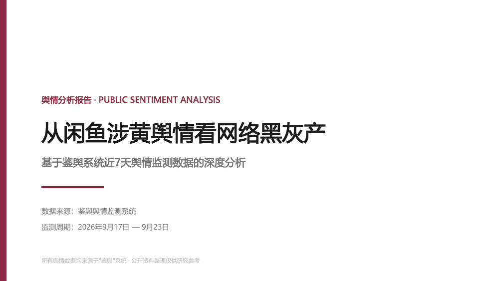
参考样稿 · 第 1 / 15 页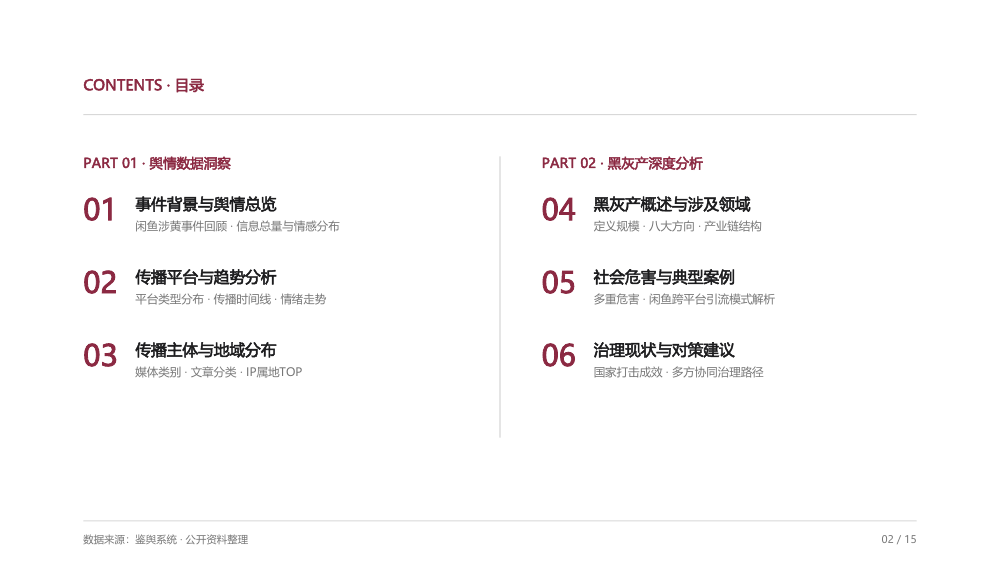
参考样稿 · 第 2 / 15 页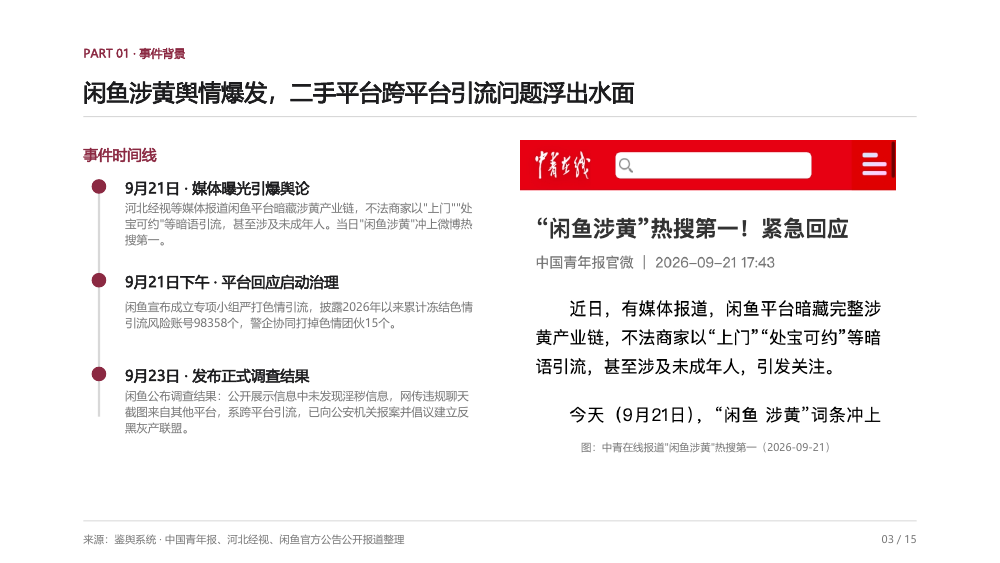
参考样稿 · 第 3 / 15 页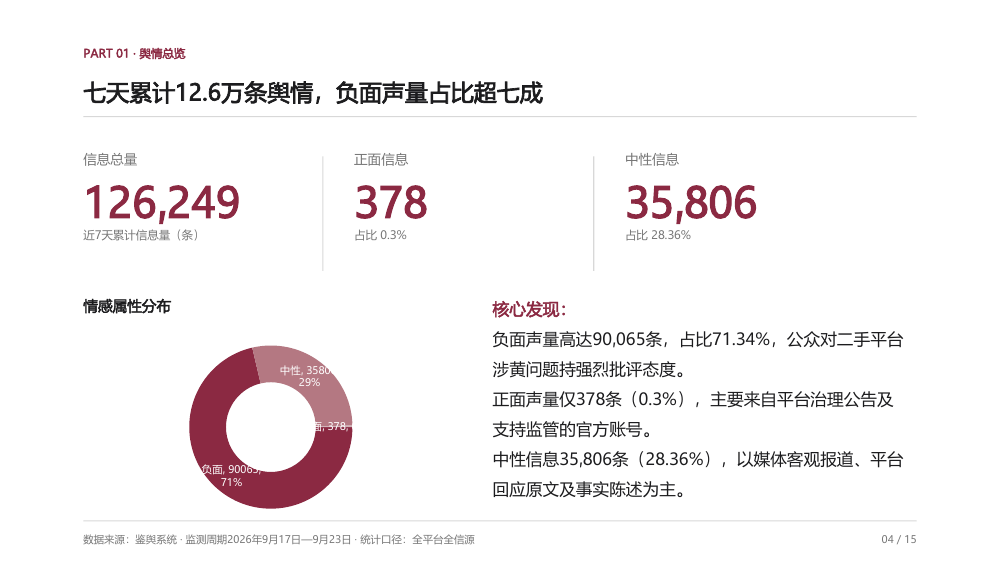
参考样稿 · 第 4 / 15 页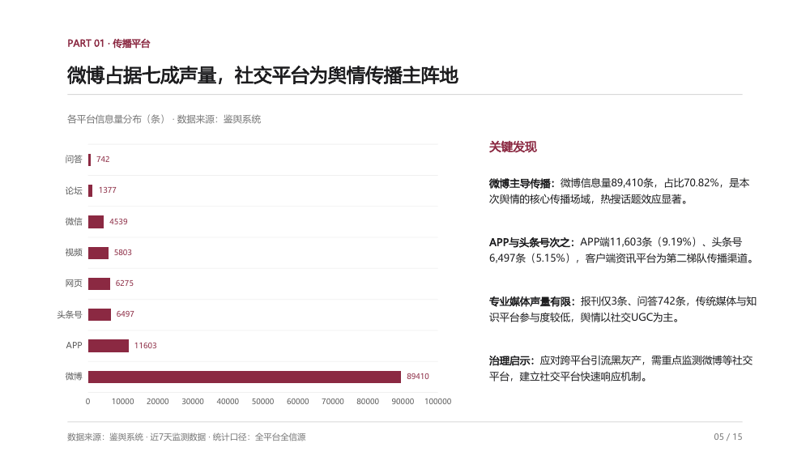
参考样稿 · 第 5 / 15 页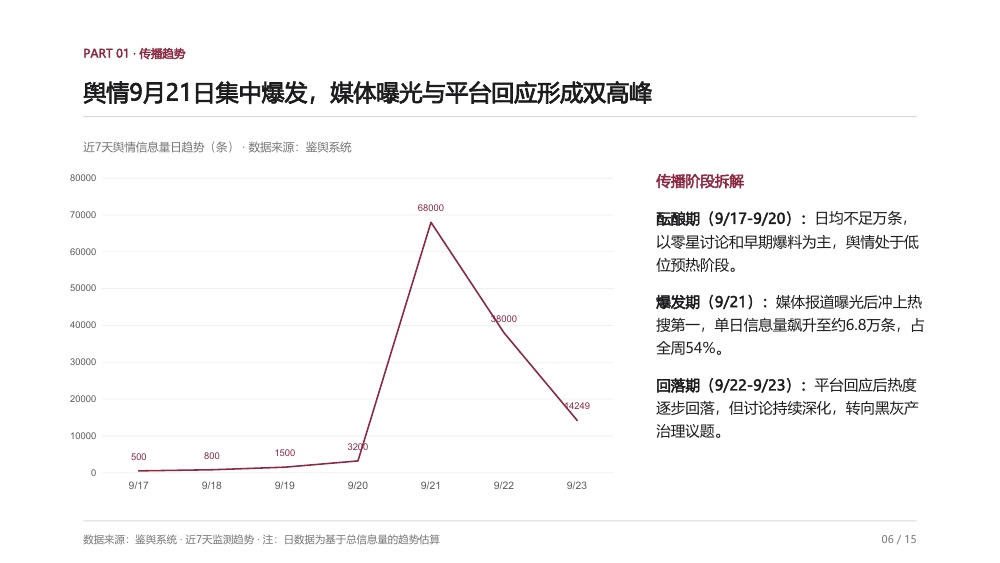
参考样稿 · 第 6 / 15 页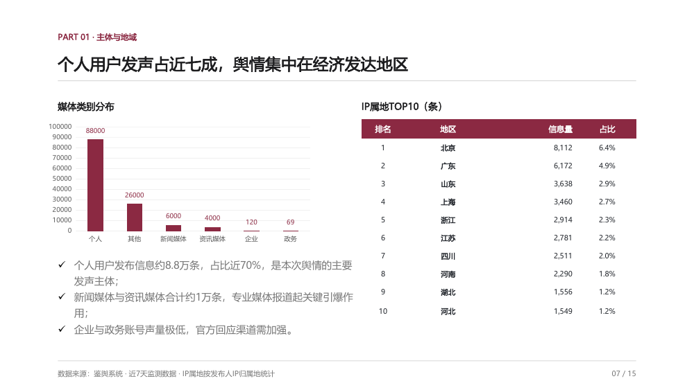
参考样稿 · 第 7 / 15 页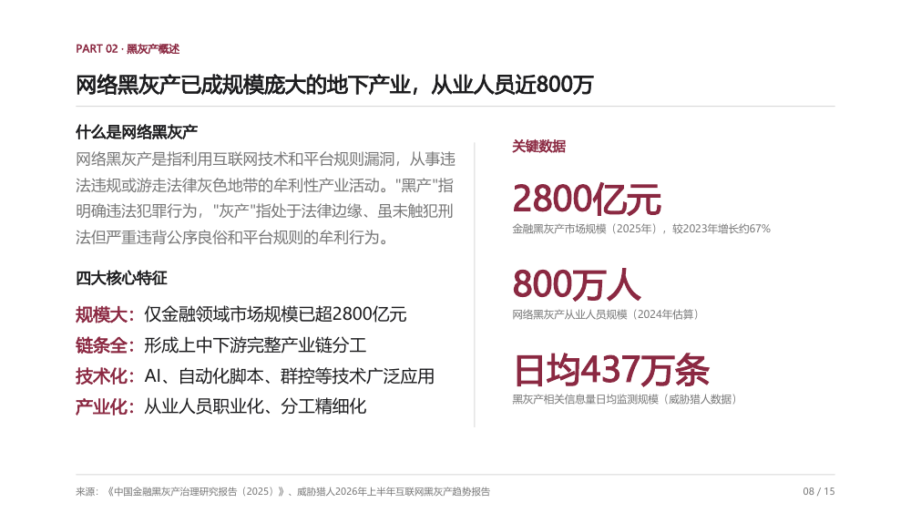
参考样稿 · 第 8 / 15 页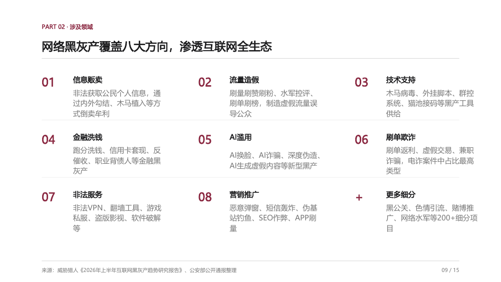
参考样稿 · 第 9 / 15 页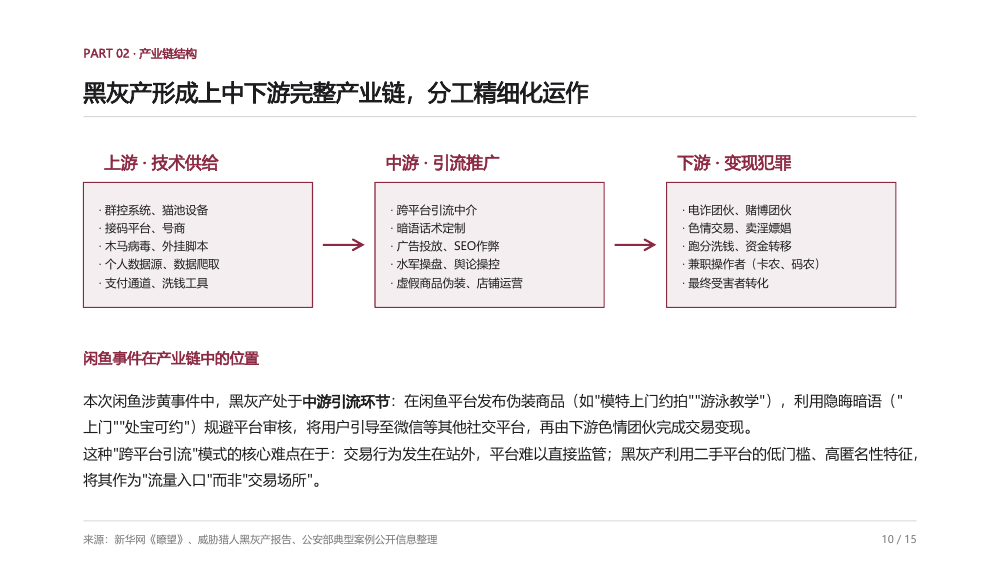
参考样稿 · 第 10 / 15 页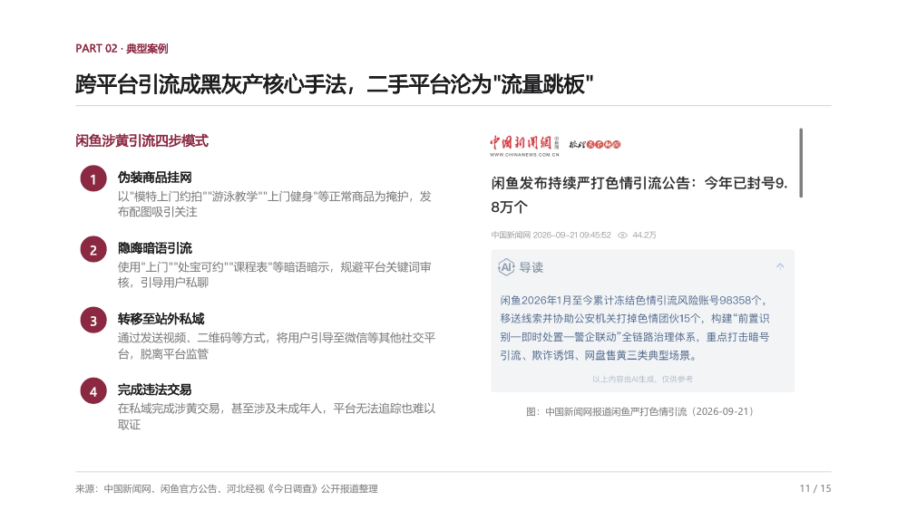
参考样稿 · 第 11 / 15 页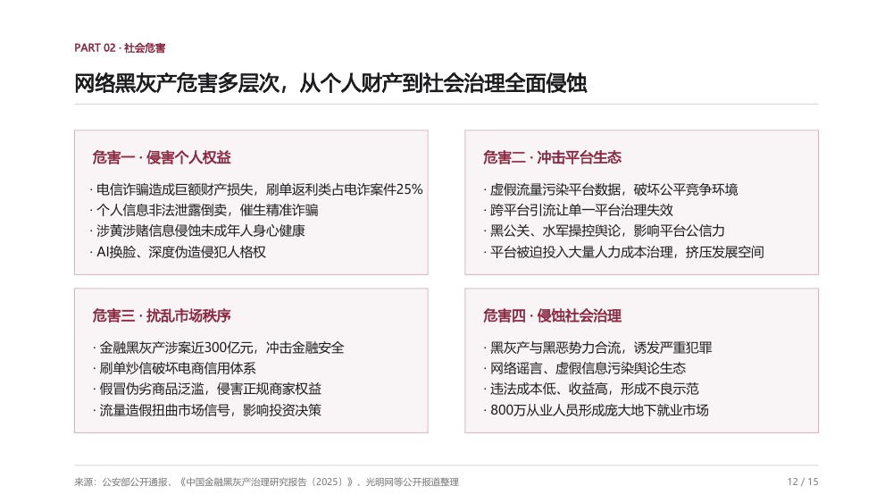
参考样稿 · 第 12 / 15 页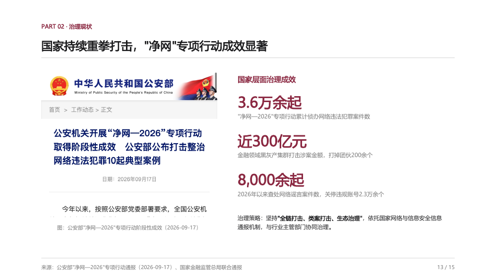
参考样稿 · 第 13 / 15 页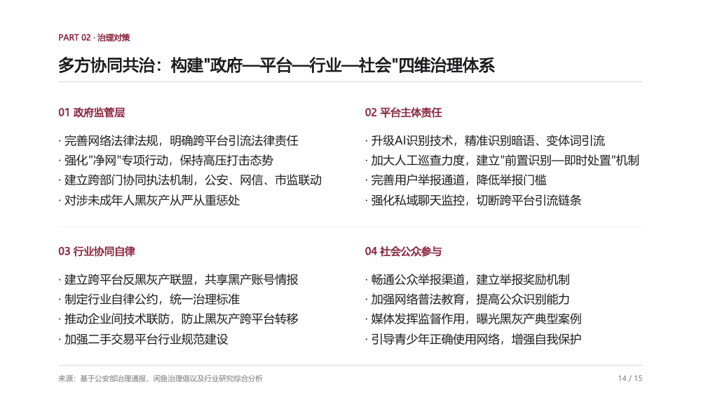
参考样稿 · 第 14 / 15 页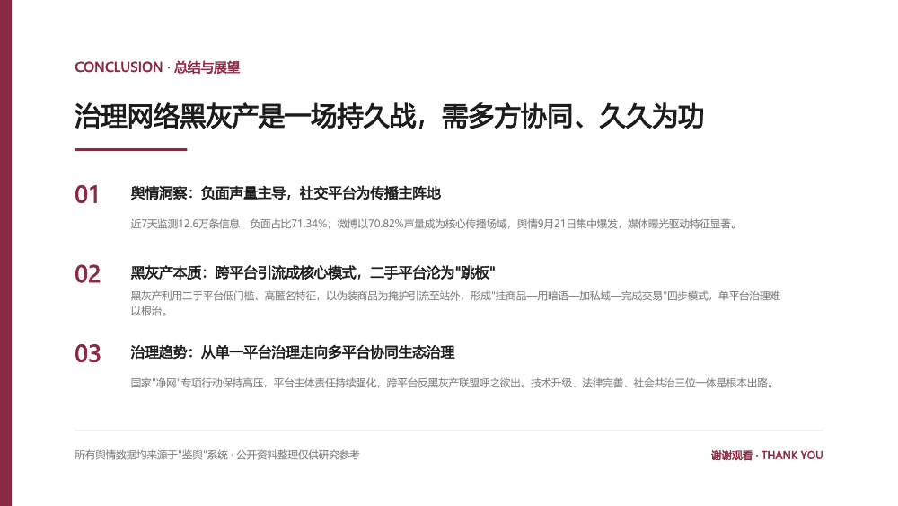
参考样稿 · 第 15 / 15 页